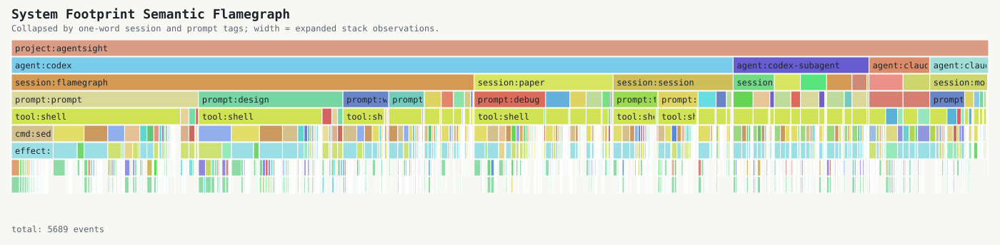
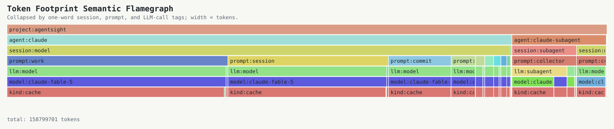
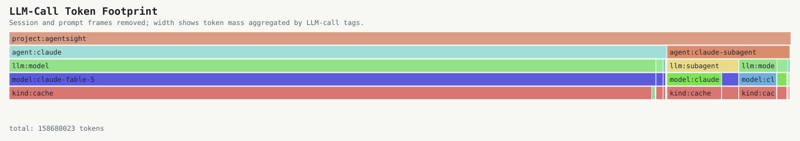
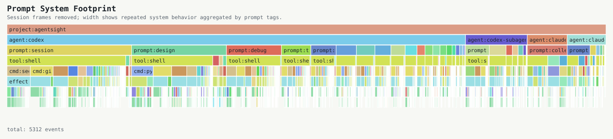
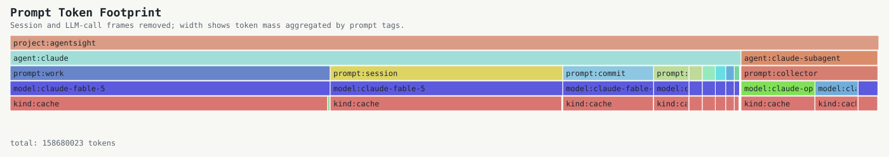
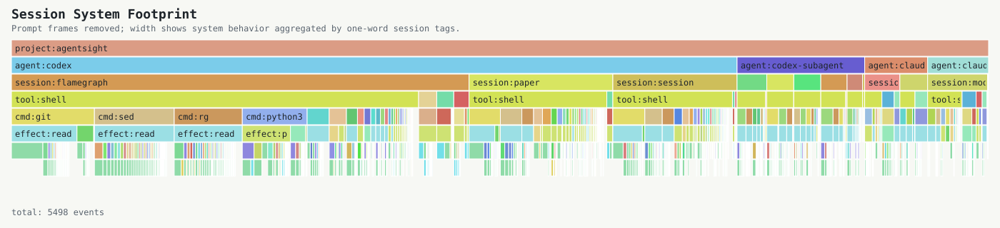
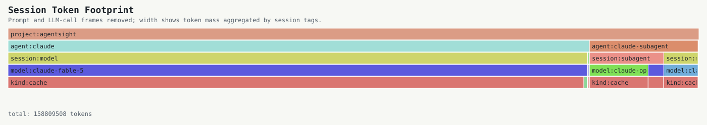

AgentSight Semantic Flamegraph Experiment
Real local Codex and Claude sessions are reduced to one-word tags, then converted to folded stacks before rendering. The important artifact is the folded stack, not the tree drawing.
Tagger mode: llama. Model successes: 48. Fallback tags: 0. Generated at 2026-06-15T01:53:37+00:00.
System Footprint
Width is aggregated stack-observation count. One tool event may expand to multiple path/domain observations. Stack grammar: project;agent;session-tag;prompt-tag;tool;cmd;effect;path/domain/status.

Token Footprint
Width is token count split by provenance kind: input, output, cache, or estimate. Treat this as source-local accounting, not a cross-agent cost benchmark. Stack grammar: project;agent;session-tag;prompt-tag;llm-tag;model;kind.

Dimension Flamegraphs
These projections keep the same underlying observations but remove one semantic axis at a time. They test whether session, prompt, and LLM-call tags remain useful as independent aggregation keys.
LLM-Call Token Footprint
Session and prompt frames removed; width shows token mass aggregated by LLM-call tags.

Prompt System Footprint
Session frames removed; width shows repeated system behavior aggregated by prompt tags.

Prompt Token Footprint
Session and LLM-call frames removed; width shows token mass aggregated by prompt tags.

Session System Footprint
Prompt frames removed; width shows system behavior aggregated by one-word session tags.

Session Token Footprint
Prompt and LLM-call frames removed; width shows token mass aggregated by session tags.

Top Prompt Tags
| tag | count |
|---|---|
| reviewdoc | 7 |
| readcheck | 5 |
| readline | 5 |
| readfile | 5 |
| readmd | 5 |
| prompt | 4 |
| reviewreq | 2 |
| review | 2 |
| auditdoc | 1 |
| reviewcode | 1 |
Repeated System Stacks
| stack | weight |
|---|---|
| project:agentsight;agent:codex-subagent;session:reviewdoc;prompt:reviewdoc;tool:shell;cmd:jq;effect:read;path:.agentsight/agentflame;status:ok | 18 |
| project:agentsight;agent:codex-subagent;session:osdi;prompt:prompt;tool:shell;cmd:nl;effect:read;path:docs/visexp/semantic_tag_flamegraph.py;status:ok | 16 |
| project:agentsight;agent:codex-subagent;session:reviewdoc;prompt:reviewreq;tool:shell;cmd:nl;effect:read;path:collector/src/sources;status:ok | 13 |
| project:agentsight;agent:codex-subagent;session:reviewing;prompt:review;tool:shell;cmd:git;effect:read;path:a34bdef:docs/visexp;status:ok | 13 |
| project:agentsight;agent:codex-subagent;session:reviewdoc;prompt:reviewreq;tool:shell;cmd:jq;effect:read;path:.agentsight/agentflame;status:ok | 10 |
| project:agentsight;agent:codex-subagent;session:reviewdoc;prompt:reviewdoc;tool:shell;cmd:nl;effect:read;path:docs/visexp/out;status:ok | 10 |
| project:agentsight;agent:codex-subagent;session:reviewdoc;prompt:reviewreq;tool:shell;cmd:nl;effect:read;path:docs/visexp/out;status:ok | 8 |
| project:agentsight;agent:codex-subagent;session:reviewing;prompt:prompt;tool:shell;cmd:nl;effect:read;path:docs/visexp/semantic_tag_flamegraph.py;status:ok | 8 |
| project:agentsight;agent:codex-subagent;session:osdi;prompt:prompt;tool:shell;cmd:head;effect:read;path:docs/visexp/out;status:ok | 8 |
| project:agentsight;agent:codex-subagent;session:reviewcode;prompt:reviewcode;tool:shell;cmd:jq;effect:read;path:docs/visexp/out;status:ok | 7 |
Nonsemantic Baseline
The baseline removes session and prompt tags before folding. It shows what a process/tool summary can find without semantic attribution.
| stack | weight |
|---|---|
| project:agentsight;agent:codex-subagent;tool:shell;cmd:nl;effect:read;path:docs/visexp/out;status:ok | 41 |
| project:agentsight;agent:codex-subagent;tool:shell;cmd:jq;effect:read;path:.agentsight/agentflame;status:ok | 32 |
| project:agentsight;agent:codex-subagent;tool:shell;cmd:nl;effect:read;path:docs/visexp/semantic_tag_flamegraph.py;status:ok | 30 |
| project:agentsight;agent:codex-subagent;tool:shell;cmd:jq;effect:read;path:docs/visexp/out;status:ok | 23 |
| project:agentsight;agent:codex-subagent;tool:shell;cmd:rg;effect:read;path:docs/visexp/out;status:ok | 14 |
| project:agentsight;agent:codex-subagent;tool:shell;cmd:nl;effect:read;path:collector/src/sources;status:ok | 13 |
| project:agentsight;agent:codex-subagent;tool:shell;cmd:git;effect:read;path:a34bdef:docs/visexp;status:ok | 13 |
| project:agentsight;agent:codex-subagent;tool:shell;cmd:sed;effect:read;path:osdi-experiment-design/references;status:ok | 12 |
| project:agentsight;agent:codex-subagent;tool:shell;cmd:sed;effect:read;path:skills/osdi-experiment-design;status:ok | 11 |
| project:agentsight;agent:codex-subagent;tool:shell;cmd:nl;effect:read;path:docs/visexp/paper;status:ok | 11 |
Behavior Diff
Normalized system stacks are compared after removing the agent frame and normalizing by each cohort's total observations. This is a diagnostic, not a causal claim.
| cohort | winner | delta/1k | codex/1k | claude/1k | codex | claude | normalized stack |
|---|---|---|---|---|---|---|---|
| top | codex | 222.222 | 222.222 | 0.0 | 6 | 0 | project:agentsight;session:countlines;prompt:readline;tool:shell;cmd:rg;effect:read;path:docs/visexp/experiment_plan.md;status:ok |
| top | codex | 185.185 | 185.185 | 0.0 | 5 | 0 | project:agentsight;session:documentqa;prompt:readcheck;tool:shell;cmd:rg;effect:read;path:docs/visexp/paper;status:ok |
| top | codex | 185.185 | 185.185 | 0.0 | 5 | 0 | project:agentsight;session:ruling;prompt:readmd;tool:shell;cmd:sed;effect:read;path:docs/visexp/out;status:ok |
| top | codex | 185.185 | 185.185 | 0.0 | 5 | 0 | project:agentsight;session:verdict;prompt:readfile;tool:shell;cmd:rg;effect:read;path:docs/visexp/claim_verdict.md;status:ok |
| top | codex | 148.148 | 148.148 | 0.0 | 4 | 0 | project:agentsight;session:updatedocs;prompt:reviewdoc;tool:shell;cmd:sed;effect:read;path:docs/visexp/state.md;status:ok |
| top | codex | 37.037 | 37.037 | 0.0 | 1 | 0 | project:agentsight;session:documentqa;prompt:readcheck;tool:shell;cmd:rg;effect:read;path:docs/visexp/paper;status:fail |
| top | codex | 37.037 | 37.037 | 0.0 | 1 | 0 | project:agentsight;session:updatedocs;prompt:reviewdoc;tool:shell;cmd:rg;effect:read;path:docs/visexp/state.md;status:ok |
| subagent | codex | 31.359 | 31.359 | 0.0 | 18 | 0 | project:agentsight;session:reviewdoc;prompt:reviewdoc;tool:shell;cmd:jq;effect:read;path:.agentsight/agentflame;status:ok |
| all | codex | 29.95 | 29.95 | 0.0 | 18 | 0 | project:agentsight;session:reviewdoc;prompt:reviewdoc;tool:shell;cmd:jq;effect:read;path:.agentsight/agentflame;status:ok |
| subagent | codex | 27.875 | 27.875 | 0.0 | 16 | 0 | project:agentsight;session:osdi;prompt:prompt;tool:shell;cmd:nl;effect:read;path:docs/visexp/semantic_tag_flamegraph.py;status:ok |
| all | codex | 26.622 | 26.622 | 0.0 | 16 | 0 | project:agentsight;session:osdi;prompt:prompt;tool:shell;cmd:nl;effect:read;path:docs/visexp/semantic_tag_flamegraph.py;status:ok |
| subagent | codex | 22.648 | 22.648 | 0.0 | 13 | 0 | project:agentsight;session:reviewdoc;prompt:reviewreq;tool:shell;cmd:nl;effect:read;path:collector/src/sources;status:ok |
Artifacts
semantic-system.folded.txt, nonsemantic-system.folded.txt, semantic-token.folded.txt, tag-dimensions.json, aggregation.json, agent-diff.csv, command-summary.csv, prompt-tags.csv, and sessions.json are generated by the flamegraph builder. evaluate_artifacts.py adds evaluation.json, semantic-mixing.csv, claim-gates.csv, and evaluation-summary.md.